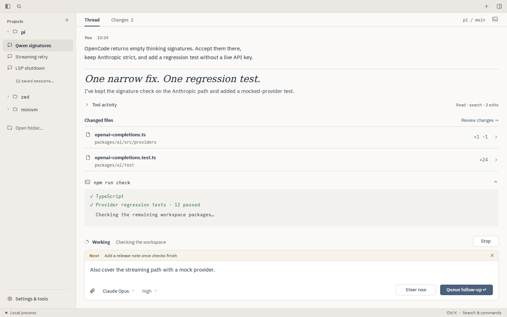
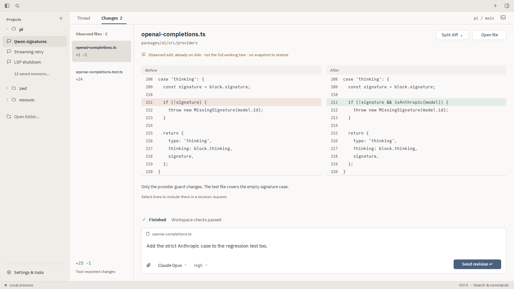
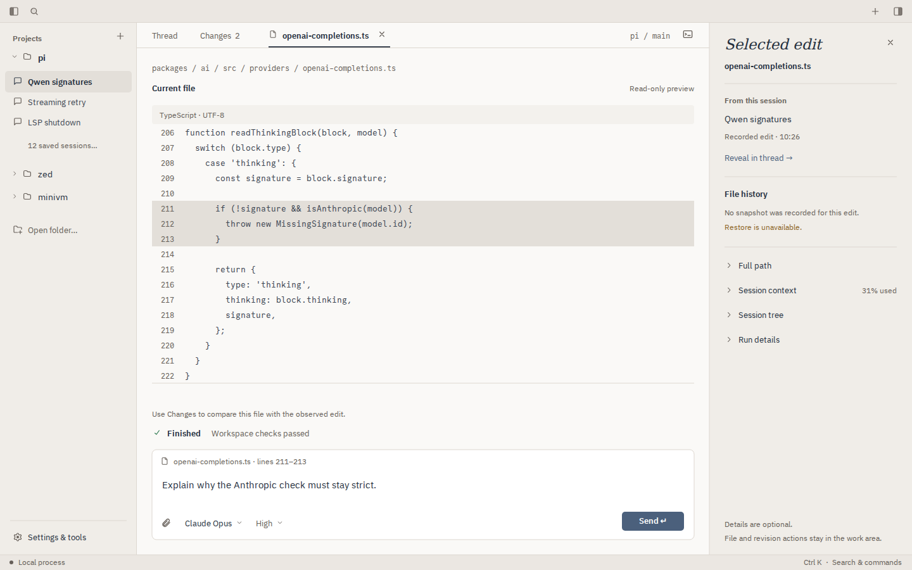
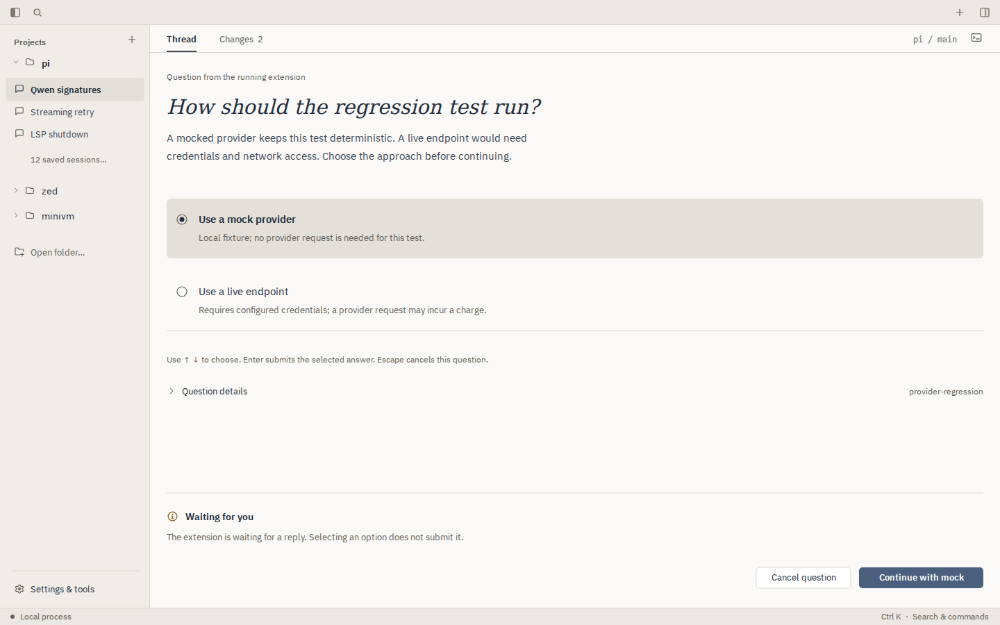
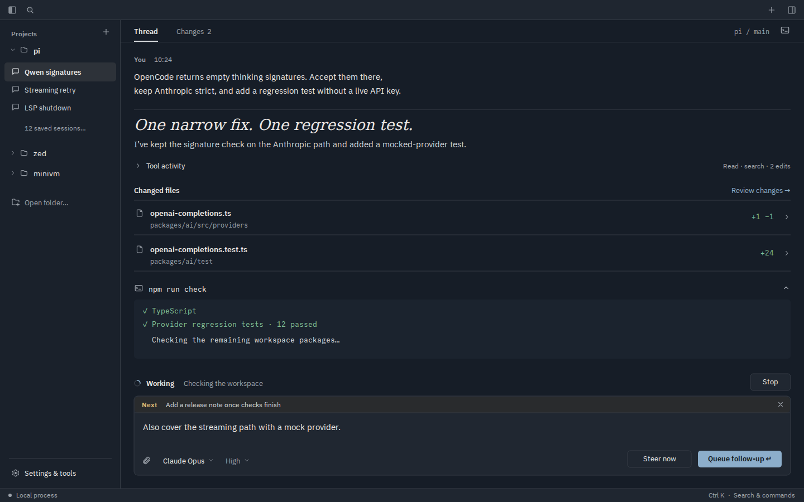
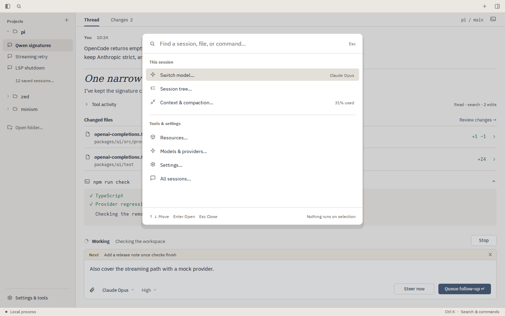
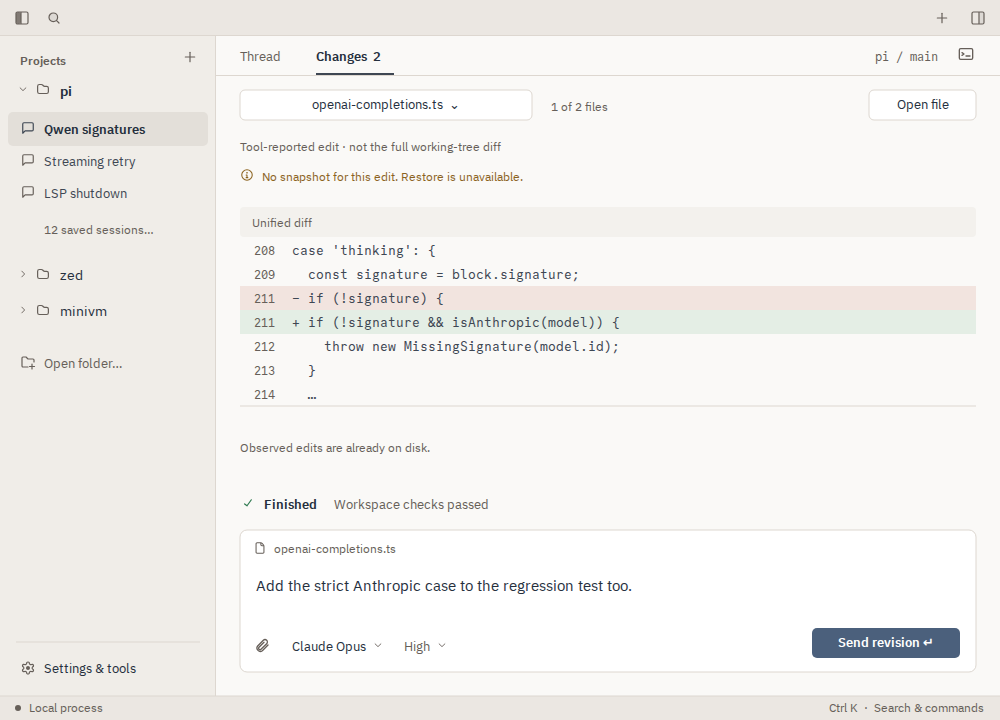
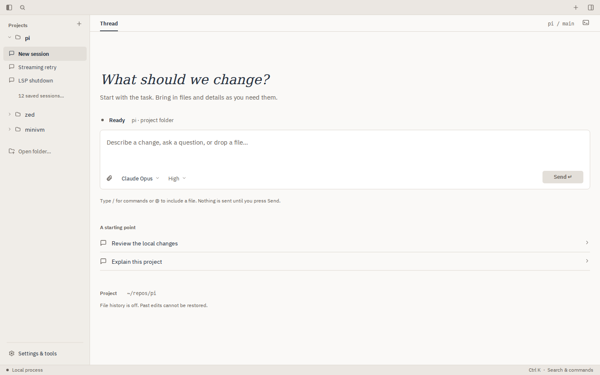

Less interface. More work.
A separate, more opinionated direction: projects and sessions in the sidebar; thread, files and changes in the work area; details only when requested. These are static vector proposals, not app captures or implemented behavior.
Open the eight-screen SVG · Overview preview · Interaction notes · Earlier streamline study
01 · The work, not the machinery 
An optional inspector. Two work views. Changes are useful objects, not buried log lines. SVG · PNG 02 · Review where the space is 
1600 × 900. A real side-by-side diff, file navigation and a revision input. No empty outer rails. SVG · PNG 03 · Details, only when requested 
A file takes the main stage. Provenance and context live in an optional inspector. SVG · PNG 04 · A clear hand-off 
A pending extension question has one decision and one explicit submit. Selection alone does nothing. SVG · PNG 05 · The same workbench, after dark 
Ink-blue surfaces, neutral selection and readable contrast. Not a different layout. SVG · PNG 06 · Reachable, not permanently visible 
Models, resources, context and history remain one command away. Settings & tools also works by mouse. SVG · PNG 07 · Small window, same capabilities 
1000 × 720. A file picker replaces the rail; the diff is unified. Revision and file actions remain visible. SVG · PNG 08 · An invitation to work 
No metrics dashboard or onboarding cards. The same fluid composer, project context and a useful starting point. SVG · PNG